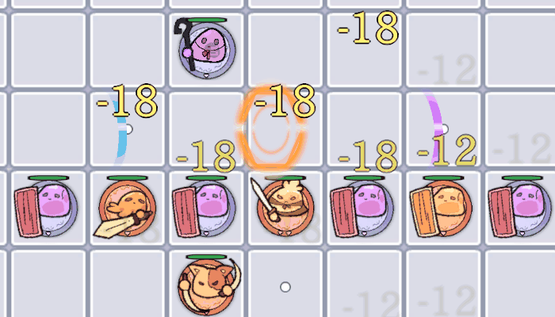
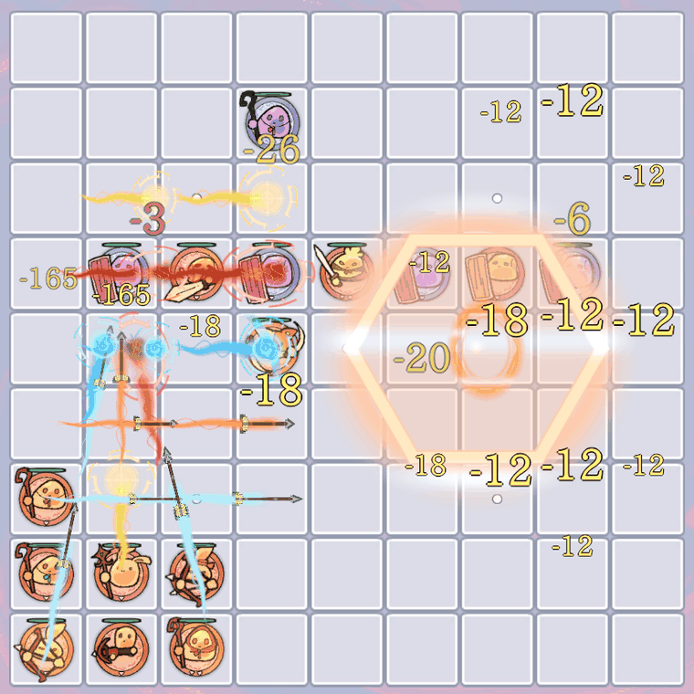
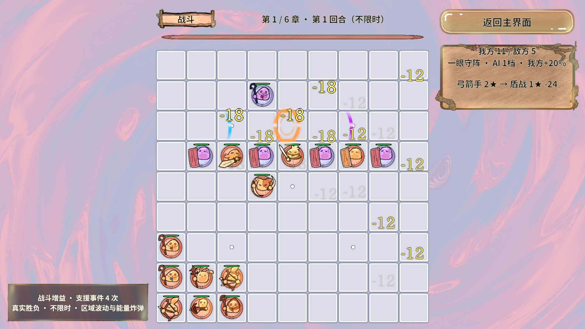
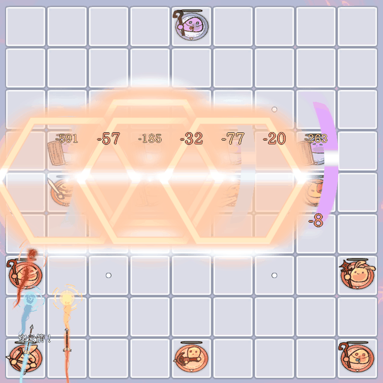
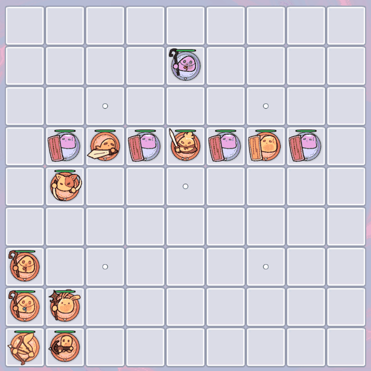
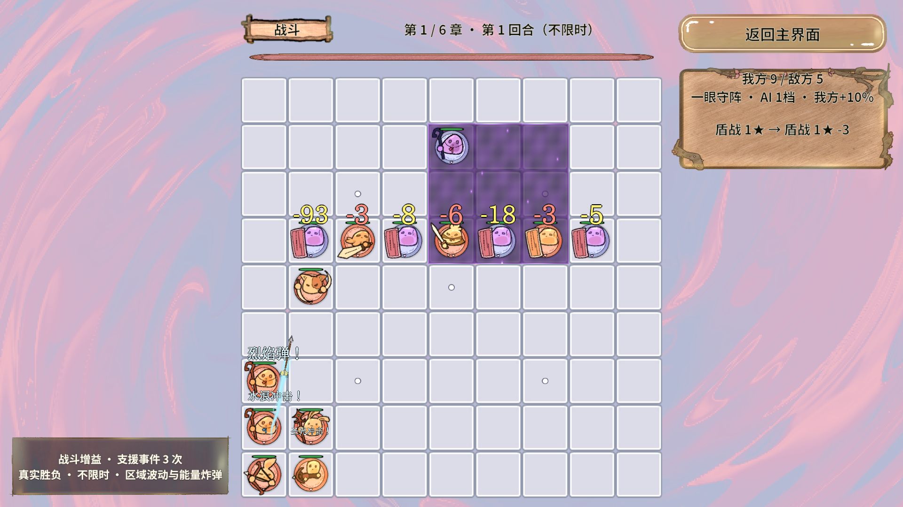
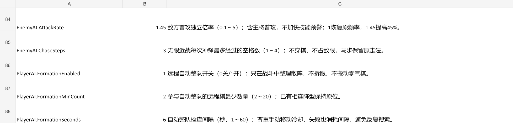
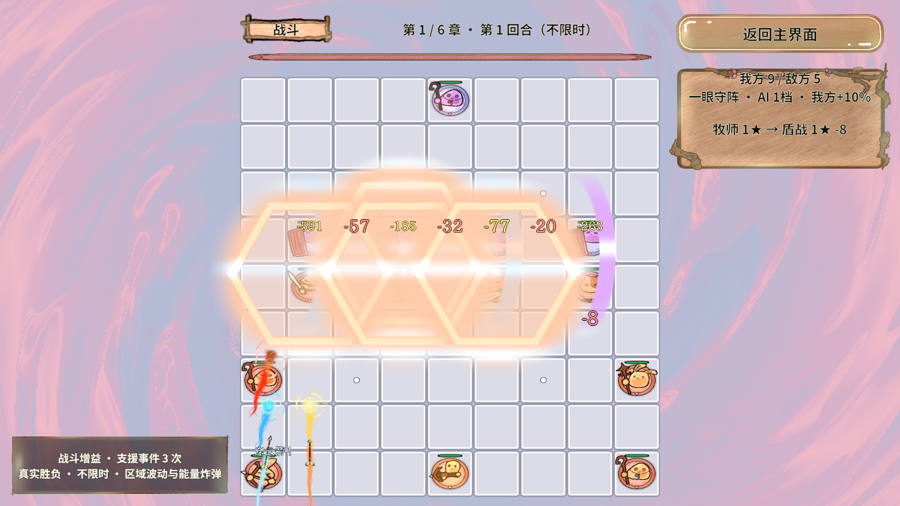
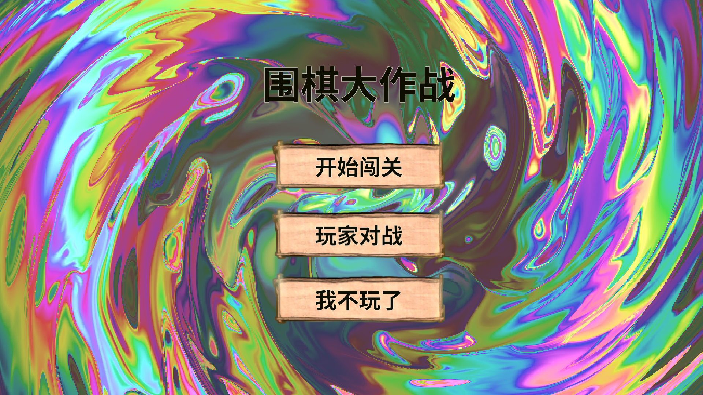

已接入真实战斗与资源包
PC与Android各29个AB已构建；新增近战图进入唯一CombatFrames图集。原有死亡沼泽、神圣神殿和实时伤害保留。查看上一批视觉升级。
本报告的动图来自Unity编辑器真实AB渲染。规则以断言结果判断，手机性能不在本次结论内。
刀光、盾击、箭尾与魔法环



动画只消费已结算的命中快照，不重复扣血。近战独立16个预算，远程35个，文字20个；同池预热71个反馈对象，回池会停止Tween、重置材质参数。
后排追击与安全列阵
敌方无眼近战优先追远程，每次最多3格直线冲锋，逐格检查整副身体能否通过。反向距离场帮助绕障碍；后续增援优先封远程棋群的气。固定无遮挡夹具两次追击达到接敌距离；守眼和障碍仍遵守规则。

至少2枚远程散落时，每6秒尝试并入相连火力阵；不拆眼、不制造友军零气，手动移动优先，拥堵时只做安全的部分。已经四邻相连的阵型保持稳定。
区域波动 · 从预警到逐格消散


参考用户视频的区域节奏，Shader使用局部生命周期，DOTween只动画覆盖层；交互格子和实际伤害时序保持一致。
攻速和列阵都能在Excel调整
战斗数值参数.xlsx → BalanceRule。保存后执行项目Excel导表并重新进入Play；AB模式还需重建目标资源包。
| 键 / 行号 | 当前 | 含义与范围 |
|---|---|---|
| EnemyAI.AttackRate / 84 | 1.45 | 敌方含Boss普通攻速倍率，0.1～5，技能频率不变 |
| EnemyAI.ChaseSteps / 85 | 3 | 直线追击最大格数，1～4 |
| PlayerAI.FormationEnabled / 86 | 1 | 0关闭、1开启 |
| PlayerAI.FormationMinCount / 87 | 2 | 整队远程数量门槛，2～20 |
| PlayerAI.FormationSeconds / 88 | 6秒 | 复查间隔，1～60秒 |
| Battle.EnemyMoveEveryTicks / 9 | 1 | 移动冷却1个基础Tick，当前1.25秒 |
查看新增配置的工作表预览

本轮已真实导表并打包。当前没有运行中热重载；详细说明见开发与使用记录。
真实验收与问题修复
| 范围 | 结果 | 证据 |
|---|---|---|
| 新增规则 | 33条通过 | 攻速、追击、封气、安全整队 |
| 既有业务与战术 | 704 + 877条通过 | 真实胜负与失败重开 |
| PC真实AB冷启动 | 3341条采样断言，3次往返 | UI与场景切换 |
| 密集反馈 | 2897条采样断言，35弹道/20文字 | 结果 / 调用 |
| 新特效及清理 | 37条Play断言；Console Error 0 | GPU像素、Tween、预算与生命周期 |
| 资源发布 | PC/Android各29包，186图唯一覆盖 | PC / Android |
本轮失败与修复记录
区域Shader曾把全局_Time与跨场景Time.time混用，导致动画句柄存在但地面不显示；改成每次效果独立的_Age，近战用_Progress。画面验收还修正了截图时点与sRGB阈值，最终保持“目标区域紫色覆盖>25%”断言。失败截图被后续同名采样覆盖，没有补造。
旧回归要求“87秒单兵必胜”和“固定摆法66轮必胜”，与现有无限时真实胜负契约冲突。改为有界等待真实结算，并验证失败时玩家真实全灭、本章首轮重开、清残局和重新发六牌。固定策略分别赢16/21轮后失败；没有加入免死或保胜。保留旧断言失败记录。


画面夹具固定输入并暂停自动模型时钟后手动Tick。整队/区域走真实服务入口；近远程展示向真实表现监听器发送BattleHitInfo，验证渲染与回收，不把这些镜头当作自然AI命中证明。独立服务断言检查真实攻速与血量。
Revolution框架可行性结论
RevHeavyFSM驱动敌人 → BattleService按BoardModel提交占格 → RevEvent发送事实 → RevPool复用反馈对象 → RevResManager及Sprite Atlas绑定 → DOTween显示与离场清理，这条业务链已在真实AB下跑通。共享材质和独立参数块能承载三类动态效果，无需修改框架内核。
边界：整队是有界安全贪心规划；有障碍时不承诺两步接敌。编辑器两次追击查询9ms和66个敌阵生成5182ms为单次测量，不代表整帧性能。Android只验证到AB构建；未测手机帧率、GPU合批、发热或零GC，也未证明固定自动策略可通关六章。
报告附件和本地引用已检查；浏览器自动预览因file协议策略被拒绝，本轮未完成HTML整页浏览器渲染检查。最终编译、资源门禁与StartScene干净状态。